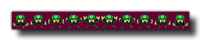

sprite_replace(ind, fname, imgnumb, removeback, smooth, xorig, yorig);
Argumento Descripción ind El índice del sprite para reemplazar permanentemente. fname El nombre de archivo de la imagen para hacer el nuevo sprite. imgnumb La cantidad de cuadros en los que se cortará el sprite horizontalmente. 1 = una sola imagen / *.gif. removeback Indica si se deben hacer transparentes todos los píxeles con el color de fondo (píxel inferior izquierdo). smooth Indica si suavizar los bordes. xorig La coordenada x del origen, relativa a la esquina superior izquierda del elemento. yorig La coordenada y del origen, relativa a la esquina superior izquierda del sprite.
N/A
Esta función funciona casi de la misma manera que sprite_add, solo en lugar de devolver el índice del sprite que está importando, sobrescribe un índice de sprite creado previamente. Al usar esta función, debe usar un índice de sprites que se haya creado y almacenado en una variable usando otras funciones como sprite_add o sprite_create_from_surface, o incluso sprite_duplicate, en lugar de un recurso de elemento de árbol de recursos. Puede reemplazar un sprite de los recursos del juego de utilizar esta función, pero al hacerlo significa que perderá el ID de referencia para el sprite que va a sustituir, independientemente de si usted llama game_restart() o no, y por lo tanto no es recomendable. Independientemente del sprite que se sustituya, esta función creará una nueva página de textura para el sprite y, por lo tanto, se debe tener cuidado al usarla, ya que puede afectar negativamente el rendimiento al aumentar el número de intercambios de textura necesarios para el renderizado.
El archivo de imagen que se va a cargar siempre debe estar en *.png el formato y todas las imágenes que se convertirán en sprites animados deberían tener un formato de "tira" (ver la imagen a continuación). Se dividirán en el número de imágenes secundarias especificadas siguiendo el ancho del elemento sprite de la regla = ancho / subimágenes. 
Como puede ver en la imagen de arriba, el sprite se ha colocado sobre un fondo morado oscuro, y esto puede eliminarse configurando el argumento "removeback" para true. Esto funciona verificando el píxel inferior izquierdo del sprite para ver el color y luego lo usa como el color que se eliminará. Por ejemplo, en la imagen de arriba, si tuviéramos el color del píxel inferior izquierdo en verde, todas las partes verdes del sprite habrían sido eliminadas y el resto del fondo púrpura ignorado.
Si eliges la opción "eliminar", también puedes desear que GameMaker Studio 2 suavice los bordes del sprite configurando el argumento "suave" para true. Todo lo que hace es crear un borde semitransparente alrededor de los bordes del sprite después de haber eliminado su fondo.
Finalmente, también puede especificar el origen x e y para el sprite. Este es el punto donde el sprite se "fija" en la instancia que lo usa, y siempre se calcula como relativo a la esquina superior izquierda 0,0 de una subimagen de sprite. Entonces, por ejemplo, un sprite de 32 x 32 píxeles con estos valores establecidos en (16,16) tendrá su origen en el centro.
De forma predeterminada, todos los nuevos sprites tienen sus cuadros delimitadores calculados automáticamente (la bbox exacta dependerá del tamaño y la transparencia del sprite); sin embargo, es posible que desee personalizar esto, en cuyo caso también debe usar la función sprite_collision_mask.
NOTA: Dependiendo de la plataforma de destino elegida, está limitado en cuanto a dónde puede guardar y cargar archivos. Consulte Manejo de archivos para obtener más información.
NOTA: debe tener en cuenta que si está utilizando esta función en su juego de destino HTML5 para cargar recursos de un servidor externo, debido a la protección XSS en los navegadores, los intentos de cargar recursos desde varios dominios pueden bloquearse y parecer que pueden regresar. resultados en blanco
¡IMPORTANTE! Esta función no está disponible con la licencia de prueba del producto.
sprite_replace(spr_banner, "gravemaker.png", 1, false, false, 0, 0);
El código anterior reemplazará el elemento de imagen indexado en "spr_banner" por otro cargado de una fuente externa.